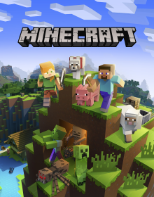
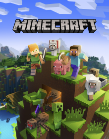

|
Un Pack de Texturas donde nos ambientara en el mudo de minecraft en 3d, no cambia mucho lo que es
el paquete original pero el ligero cambio es el 3D
|
Un pack de texturas el cual, convierte todos los bloques como si fueran papel, este pack es
esencialmente para computadores de gama baja o para el que quiera algo sencillo
|
Es un paquete de texturas simple creado con los colores básicos con un resultado impresionante
en cuanto a colores, pero no solo eso, la calidad con que hicieron cada bloque es casi perfecta para ser
un paquete con resolución 16x es uno de los más recomendados y descargados actualmente. |
Es un pack de texturas que se concentra en los minerales de minecrafty cambia un poco las texturas de iluminacion
|
 
